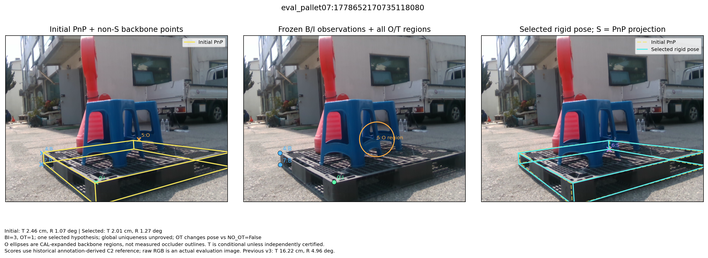
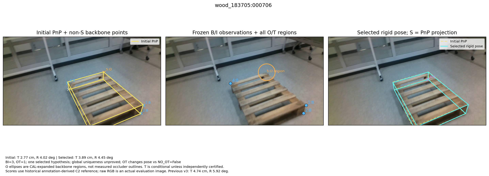
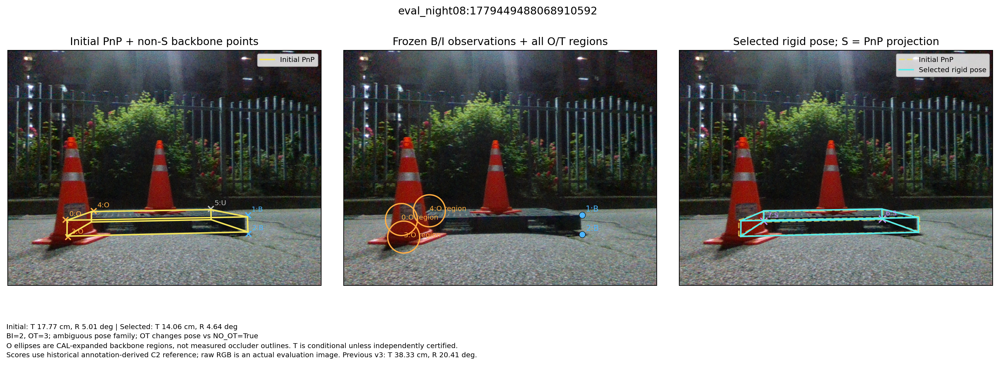
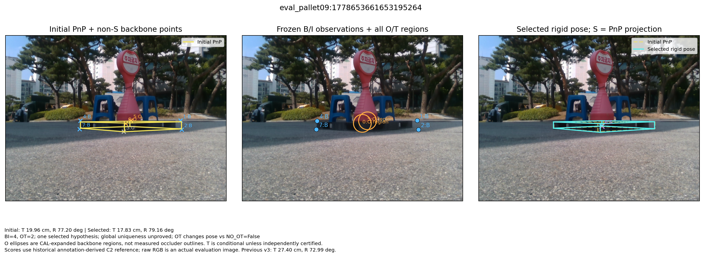

Four fixed historical cases, every original-success to selected-failure case, and every primary OT pose-change case. No fitting or pose selection occurs here.

Initial: T 2.46 cm, R 1.07 deg | Selected: T 2.01 cm, R 1.27 deg BI=3, OT=1; one selected hypothesis; global uniqueness unproved; OT changes pose vs NO_OT=False O ellipses are CAL-expanded backbone regions, not measured occluder outlines. T is conditional unless independently certified. Scores use historical annotation-derived C2 reference; raw RGB is an actual evaluation image. Previous v3: T 16.22 cm, R 4.96 deg.

Initial: T 2.77 cm, R 4.02 deg | Selected: T 3.89 cm, R 4.45 deg BI=3, OT=1; one selected hypothesis; global uniqueness unproved; OT changes pose vs NO_OT=False O ellipses are CAL-expanded backbone regions, not measured occluder outlines. T is conditional unless independently certified. Scores use historical annotation-derived C2 reference; raw RGB is an actual evaluation image. Previous v3: T 4.74 cm, R 5.92 deg.

Initial: T 17.77 cm, R 5.01 deg | Selected: T 14.06 cm, R 4.64 deg BI=2, OT=3; ambiguous pose family; OT changes pose vs NO_OT=True O ellipses are CAL-expanded backbone regions, not measured occluder outlines. T is conditional unless independently certified. Scores use historical annotation-derived C2 reference; raw RGB is an actual evaluation image. Previous v3: T 38.33 cm, R 20.41 deg.

Initial: T 19.96 cm, R 77.20 deg | Selected: T 17.83 cm, R 79.16 deg BI=4, OT=2; one selected hypothesis; global uniqueness unproved; OT changes pose vs NO_OT=False O ellipses are CAL-expanded backbone regions, not measured occluder outlines. T is conditional unless independently certified. Scores use historical annotation-derived C2 reference; raw RGB is an actual evaluation image. Previous v3: T 27.40 cm, R 72.99 deg.